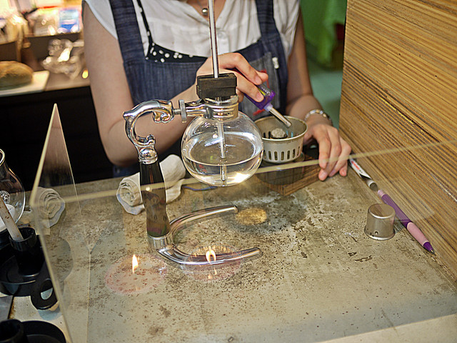
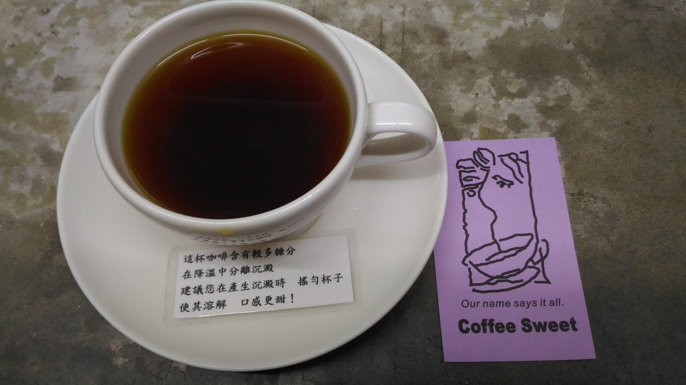

Coffee Sweet


Coffee Sweet的店隱身在市民大道的小巷弄內, 店門口跟市民大道只有一個小公園之隔，不過卻極為隱密, 從中山捷運站或是台北車站步行10分鐘也可以到達，交通也算是相當方便, 店內設有20個左右的室內座位，店外有吸菸的咖啡座, 下午時間幾乎是全店滿座，生意非常非常的好, 老闆則是咖啡界相當資深的前輩，店內也不乏慕名而來的顧客呢。 Coffee Sweet店內是不能拍照的, 所以照片是小編我偷偷拍的(噓), 這家的咖啡豆焙度是極淺焙, 所以展現出來的香味表現會很強烈, 酸感也會比較強, 要是怕酸的可以點義式來喝XD Coffee Sweet的黑咖啡、拿鐵、甜點都相當不賴, 是一家相當適合普羅大眾以及咖啡行家來訪的店家唷!